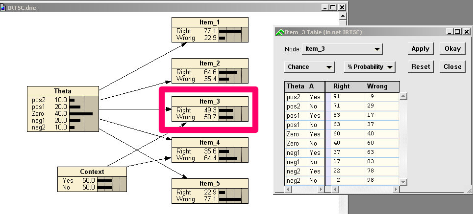
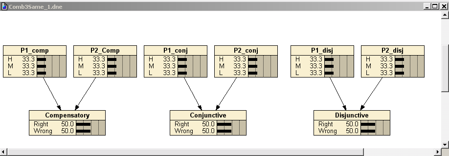
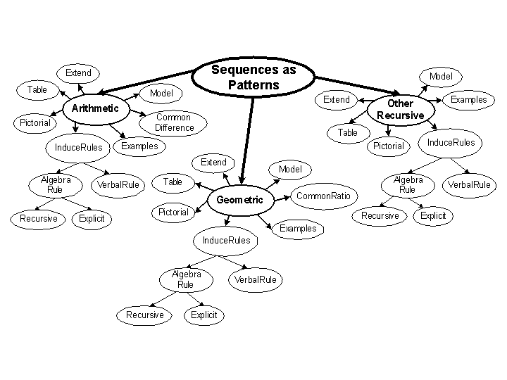
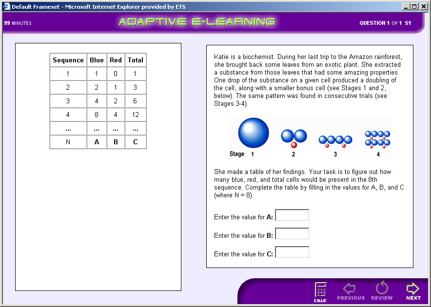
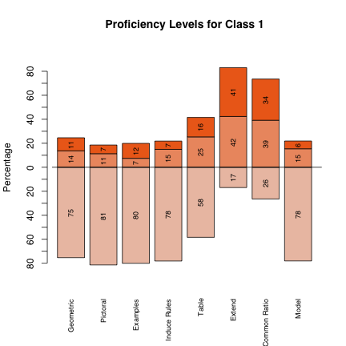
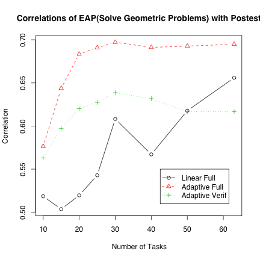

irt1pl <- function(theta,beta) {
1/(1+exp(beta-theta))
}
irt1pl(c(-2,-1,0,1,2),0)[1] 0.1192029 0.2689414 0.5000000 0.7310586 0.8807971
To fully specify the model, need:
Proficiency Model
Task/Evidence Models
Assembly Model
Some Numbers
Tasks yield an work product which can be unambiguously scored right or wrong.
Each task has a single observable outcome variable.
Tasks are often called items, although the common usage often blurs the distinction between the presentation of the item and the outcome variable.
5 items
Increasing difficulty:
\[ (\beta_1, \ldots, \beta_5) = (-1.5, -0.75, 0, 0.75, 1.5)\ \] .
irt1pl <- function(theta,beta) {
1/(1+exp(beta-theta))
}
irt1pl(c(-2,-1,0,1,2),0)[1] 0.1192029 0.2689414 0.5000000 0.7310586 0.8807971Items are presented adaptively.
| θ | Prior | Item 1 | Item 2 | Item 3 | Item 4 | Item 5 |
|---|---|---|---|---|---|---|
| -2 | 0.1 | 0.3775 | 0.2227 | 0.1192 | 0.0601 | 0.0293 |
| -1 | 0.2 | 0.6225 | 0.4378 | 0.2689 | 0.1480 | 0.0759 |
| 0 | 0.4 | 0.8176 | 0.6792 | 0.5000 | 0.3208 | 0.1824 |
| 1 | 0.2 | 0.9241 | 0.8520 | 0.7311 | 0.5622 | 0.3775 |
| 2 | 0.1 | 0.9707 | 0.9399 | 0.8088 | 0.7773 | 0.6225 |
Use the network CompensatoryConjunctiveNets/IRT5.dne to answer these questions.
#|include: FALSE
#system("netica CompensatoryConjunctiveNets/IRT5.dne")Inside Netica, to set a node to a value either, click on the value name, or right click and select the value.
To clear a value, click on it again, or right click and select “undefined”.
Suppose we have observed for a given student \(X_2 = \text{right}\) and \(X_3=\text{right}\) , what is the next best item to present (hint, look for expected probabilities closest to .5,.5
Same thing, with \(X_2 = \text{right}\) and \(X_3=\text{wrong}\)
Same thing, with \(X_2 = \text{wrong}\) and \(X_3=\text{wrong}\)
DiagrammeR::grViz('
digraph IRTC {
subgraph{ Q[label="θ"], Context }
subgraph {
X1; X2; X3; X4; X5;
}
Q -> X1; Q-> X2; Q-> X3; Q->X4; Q->X5
Context -> X3; Context -> X4;
}')Suppose that Items 3 and 4 share common presentation material
Example: a word problem about “Yacht racing” might use nautical jargon like “leeward” and “tacking”
People familiar with the content area would have an advantage over people unfamiliar with the content area.
Would never us this example in practice because of DIF (Differential Item Functioning)
Group Items 3 and 4 into a single task with two observed outcome variables
Add a person-specific, task-specific latent variable called “context” with values familiar and unfamiliar
Estimates of \(\theta\) will “integrate out” the context effect
Can use as a mathematical trick to force dependencies between observables.
Use the network CompensatoryConjunctiveNets/IRT5C.dne to answer these questions.
#|include: FALSE
#system("netica CompensatoryConjunctiveNets/IRT5C.dne")The CPTs in IRT5C have been set so that the marginal predictions (if the context is unknown), should have the same value.

If Context effect is generally construct-irrelevant variance, if correlated with group membership this is bad (DIF)
When calibrating using 2PL IRT model, can get similar joint distribution for \(\theta\), \(X_3\), and \(X_4\) by decreasing the discrimination parameter
Consider a task which requires two Proficiencies:
Three different ways to combine those proficiencies:
Compensatory : More of Proficiency 1 compensates for less of Proficiency 2. Combination rule is sum .
Conjunctive : Both proficiencies are needed to solve the problem. Combination rule is minimum.
Disjunctive : Two proficiencies represent alternative solution paths to the problem. Combination rule is maximum.

There are two parent nodes, and both parents are conditionally independent of each other. The difference among the three models lies in the third term below:
\[P( P_1, P_2, X) = P( P_1) \cdot P(P_2) \cdot P(X| P_1,P_2 )\]
The priors for the parent nodes are the same for the three models with 0.3333 of probability at each of the H, M, and L states.
The initial marginal probability for X is the same for the three models (50/50).
This table contains the conditional probabilities for the parent nodes (P1 and P2) and the combination model for the three models.
{r CPTcombine3 Pcomp <- c(H=.9,M=.5,L=.1) Pconj <- c(H=.9,M=.7,L=.3) Pdisj <- c(H=.7,M=.3,L=.1) cpts <- data.frame(P1=rep(names(Pcomp),each=3),P2=rep(names(Pcomp),3), Compensatory=as.vector(outer(Pcomp,Pcomp,"+")/2), Conjunctive=as.vector(outer(Pconj,Pconj,"min")), Disjunctive=as.vector(outer(Pdisj,Pdisj,"max"))) knitr::kable(cpts)
Use the network CompensatoryConjunctiveNets/Comb3Same_1.dne to answer these questions.
#|include: FALSE
#system("netica CompensatoryConjunctiveNets/Comb3Same_1.dne")Verify that \(P(P_1)\), \(P(P_2)\) and \(P(Obs)\) are the same for all three models. ( Obs represents either the node Compensatory , Conjunctive, or Disjunctive )
Assume Obs=right; calculate \(P(P_1)\) and \(P(P_2)\) for all three models.
Assume Obs=wrong; calculate \(P(P_1)\) and \(P(P_2)\) for all three models.
Assume Obs=right, and \(P_1\)=H; Calculate \(P(P_2)\) for all three models.
Assume Obs=right, and \(P_1\)=M; Calculate \(P(P_2)\) for all three models.
Assume Obs=right, and \(P_1\)=L; Calculate \(P(P_2)\) for all three models.
Explain the differences
Map states of parents to points on IRT \(\theta\) scale.
Use Compensatory (average), Conjunctive (minimum) or Disjunctive (maximum) to combine effective thetas.
Use IRT (logistic) model to map to probabilities.
Valid Assessment . Based on evidence-centered design (ECD).
Adaptive Sequencing . Tasks presented in line with an adaptive algorithm.
Diagnostic Feedback . Feedback is immediate and addresses common errors and misconceptions.
Aligned . Assessments aligned with (a) state and national standards and (b) curricula in current textbooks.


Identify Proficiency variables
Structure Proficiency Model
Elicit Proficiency Model Parameters
Construct Tasks to target proficiencies at Low/Medium/High difficulty
Build Evidence Models based on difficulty/Q-Matrix
right / Wrong
Five proficiency variables
Three tasks, with observables {X11}, {X21, X22 , X23}, {X31}.
A: See the Q-matrix (Fischer, Tatsuoka).
| q1 | q2 | q3 | q4 | q5 | X23 | |
|---|---|---|---|---|---|---|
| X11 | 1 | 0 | 0 | 0 | 0 | – |
| X21 | 0 | 1 | 0 | 0 | 0 | 1 |
| X22 | 0 | 1 | 0 | 1 | 0 | 1 |
| X23 | 0 | 0 | 0 | 0 | 0 | N/A |
| X31 | 0 | 1 | 1 | 1 | 0 | – |

Proficiency variables

Observables and proficiency variable parents for the tasks


$# Footprints of tasks in proficiency model (figure out from rows in Q-matrix)


Good (1985)
H is binary hypothesis, e.g., Proficiency > Medium
E is evidence for hypothesis
Weight of Evidence (WOE) is

“Centibans” (log base 10, multiply by 100)
Positive for evidence supporting hypothesis, negative for evidence refuting hypothesis
Movement in tails of distribution as important as movement near center
Bayes theorem using log odds
Can define Conditional Weight of Evidence
Nice Additive properties
Order sensitive
WOE Balance Sheet (Madigan, Mosurski & Almond, 1997)


63 tasks total
1 Easy
2 Medium
3 Hard
a Item type
b Isomorph
P(Solve Geom Sequences)
| Task | Acc | H | M | L |
|---|---|---|---|---|
| SolveGeometricProblems2a | 0 | 0.16 | 0.26 | 0.58 |
| SolveGeometricProblems3a | 1 | 0.35 | 0.35 | 0.30 |
| SolveGeometricProblems3b | 1 | 0.64 | 0.29 | 0.07 |
| SolveGeometricProblems2b | 1 | 0.83 | 0.16 | 0.01 |
| VisualExtendTable2a | 1 | 0.89 | 0.10 | 0.01 |
| SolveGeometricProblems1a | 0 | 0.78 | 0.21 | 0.01 |
| SolveGeometricProblems1b | 1 | 0.82 | 0.18 | 0.00 |
| VisualExtendVerbalRule2a | 1 | 0.85 | 0.15 | 0.00 |
| ModelExtendTableGeometric3a | 1 | 0.90 | 0.10 | 0.00 |
| ExamplesGeometric2a | 0 | 0.87 | 0.13 | 0.00 |
| VisualExplicitVerbalRule3a | 1 | 0.91 | 0.09 | 0.00 |
| VerbalRuleModelGeometric3a | 1 | 0.95 | 0.05 | 0.00 |
WOE for H vs. M, L
When choosing next “test” (task/item) look at expected value of WOE where expectation is taken wrt P(E|H) .
where represent the possible results.


Madigan and Almond (1996)
Enter any observed evidence into net
Instantiate Hypothesis = True (may need to use virtual evidence if hypothesis is compound)
Calculate for each candidate item
Instantiate Hypothesis = False
Calculate for each candidate item


$# Related Measures
Value of Information
S is proficiency state
d is decision
u is utility

Mutual Information
Extends to non-binary hypothesis nodes
Kullback-Liebler distance between joint distribution and independence


Next assume candidate gets first item wrong and repeat
Repeat exercise using hypothesis SolveGeometricProblems > Low
Use Network ACEDMotif2.dne
Select the SolveGeometricProblems node
Run the program Network>Sensitivity to Findings
This will list the Mutual information for all nodes
Select the observable with the highest mutual information as the first task
Use this to process a person who gets every task right
Use this to process a person who gets every task wrong

| Proficiency (EAP) | Reliability |
|---|---|
| Solve Geometric Sequences (SGS) | 0.88 |
| Find Common Ratio | 0.90 |
| Generate Examples | 0.92 |
| Extend Sequence | 0.86 |
| Model Sequence | 0.80 |
| Use Table | 0.82 |
| Use Pictures | 0.82 |
| Induce Rules | 0.78 |
| Number Right | 0.88 |
Calculated with Split Halves (ECD design)
Correlation of EAP score with posttest is 0.65 (close to reliability of posttest)
Even with pretest forced into the equation, EAP score accounted for 17% unique variance
Reliability of modal classifications was worse

For adaptive conditions, correlation with posttest seems to hit upper limit by 20 items
Standard Error of Correlations is large
Jump in linear case related to sequence of items
E/A showed significant gains
Others did not
Learning and assessment reliability!!!!!
Special thanks to Val Shute for letting us used ACED data and models in this tutorial.
ACED development and data collection was sponsored by National Science Foundation Grant No. 0313202.
Complete data available at: http://ecd.ralmond.net/ecdwiki/ACED/ACED